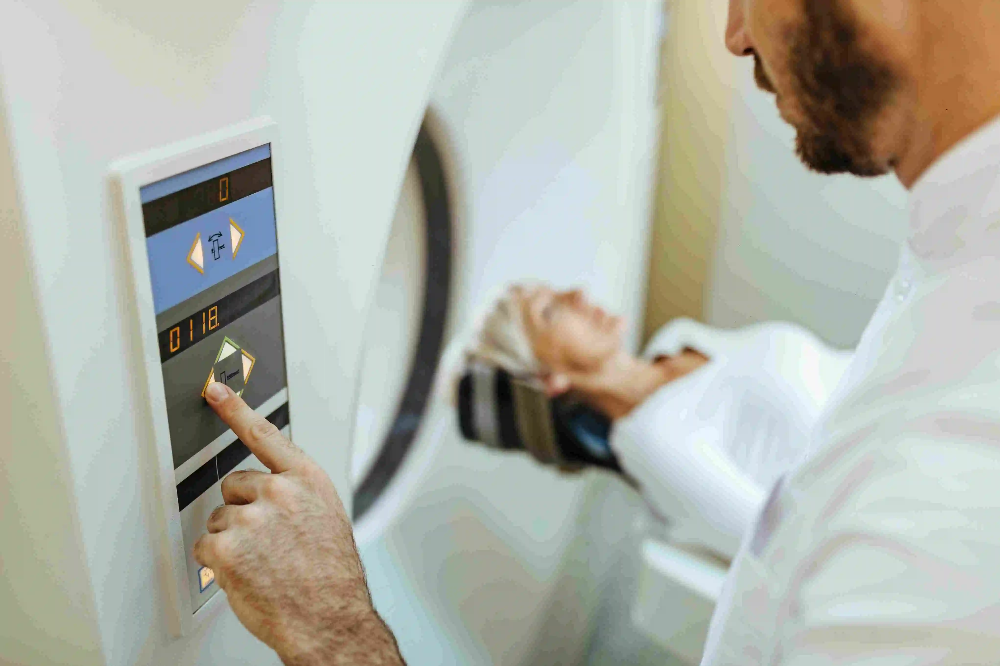
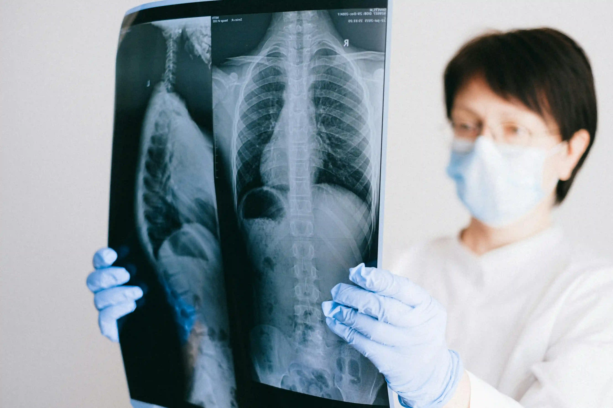

High-Resolution Scans at Gani Hospital: Why Accurate Imaging Is the First Step to Recovery
Accurate diagnosis begins with accurate imaging. Whether it is detecting an abdominal mass, monitoring a growing baby, assessing a fracture, or evaluating blood flow through critical vessels — the quality of a scan directly determines the quality of your treatment. Gani Hospital is the best scan center in Ramanathapuram, providing high-tech scan Ramnad services using advanced diagnostic equipment operated by experienced radiologists. When accuracy matters most, Gani Hospitals imaging centre is where Ramanathapuram and the wider Ramnad district comes first.

Introduction: Why Imaging Is the Foundation of Accurate Diagnosis
In modern medicine, the ability to see inside the human body without surgery is one of the greatest clinical tools available. Diagnostic imaging Ramanathapuram — encompassing ultrasound, X-ray, Doppler scanning, and other modalities — gives doctors a clear window into organs, tissues, blood vessels, and bones that physical examination alone cannot provide.
When a patient visits a doctor with abdominal pain, chest discomfort, joint injury, or any pregnancy-related concern, the first essential step is often an imaging scan. A high-resolution, accurate scan provides the information needed to confirm a diagnosis, rule out serious conditions, monitor a treatment plan, or guide a surgical procedure. Poor-quality imaging leads to missed diagnoses, incorrect treatments, and unnecessary patient suffering.
This is why choosing the best scan center in Ramanathapuram is not just a matter of convenience — it is a critical healthcare decision. Gani Hospital, the leading radiology services near me destination for patients across Ramnad district, combines advanced imaging technology, experienced radiologists, and affordable scan services Ramanathapuram to deliver reports that doctors and patients can trust completely.
From ultrasound scan Ramnad to digital X-ray, from Doppler scan near me to detailed pregnancy scanning Ramnad — Gani Hospitals imaging centre is the single most comprehensive diagnostic imaging Ramanathapuram facility in the region.
💡 Did You Know? A misread or low-resolution scan can delay the correct diagnosis by weeks — leading to disease progression, higher treatment costs, and worse outcomes. Always choose a high-tech scan Ramnad facility with qualified radiologists, like Gani Hospital.
Complete Scan & Imaging Services at Gani Hospital Ramanathapuram
Gani Hospitals imaging centre offers the widest range of radiology services near me in Ramanathapuram — all under one roof, with same-day reporting for most studies. Here is a complete overview of our diagnostic imaging Ramanathapuram services:
| Scan / Imaging Type | Common Uses | Availability |
|---|---|---|
| Ultrasound Scan Ramnad | Abdomen, pelvis, liver, kidney, thyroid, soft tissue | Daily |
| Pregnancy Scanning Ramnad | Dating scan, anomaly scan, growth scan, fetal position | Daily |
| Doppler Scan Near Me | Blood flow assessment, fetal Doppler, venous Doppler | Daily |
| X-Ray Center Ramanathapuram | Chest, bones, joints, spine, lungs, fracture assessment | 24/7 |
| High-Tech Scan Ramnad (Digital) | High-resolution digital imaging for precise organ assessment | Daily |
| Abdominal & Pelvic Ultrasound | Gallstones, appendix, kidney stones, ovarian cysts, uterine fibroids | Daily |
| Thyroid & Neck Scan | Thyroid nodules, swollen lymph nodes, neck masses | Daily |
| Musculoskeletal Ultrasound | Tendon tears, joint effusion, soft tissue injuries | Daily |
| Breast Ultrasound | Cyst vs. solid mass differentiation, lump assessment | Daily |
| Echocardiography | Heart function, valve assessment, pericardial effusion | By appointment |
All imaging at Gani Hospitals imaging centre is performed and reported by qualified, experienced radiologists. Book your scan appointment at Gani Hospital today for fast, accurate results.
Ultrasound Scan at Gani Hospital Ramnad — Safe, Fast, and Precise

The ultrasound scan Ramnad service at Gani Hospital is one of the most in-demand radiology services near me across the district. Ultrasound imaging uses sound waves — no radiation — making it completely safe for patients of all ages, including pregnant women, infants, and elderly patients.
Our high-frequency ultrasound machines produce high-resolution, real-time images of internal organs, allowing our radiologists to detect even subtle abnormalities that lower-quality equipment would miss entirely.
What Our Ultrasound Scan Ramnad Covers
- Abdominal ultrasound — liver, gallbladder, pancreas, spleen, kidneys, bladder
- Pelvic ultrasound — uterus, ovaries, fallopian tubes
- Thyroid and neck ultrasound — nodule characterisation, lymph node assessment
- Breast ultrasound — mass characterisation, cyst vs. solid lesion
- Scrotal ultrasound — testicular masses, varicocele assessment
- Soft tissue and musculoskeletal ultrasound — tendon, ligament, joint injuries
- Neonatal head ultrasound — brain imaging in premature or newborn babies
As the best scan center in Ramanathapuram for ultrasound, Gani Hospital delivers same-day reports in most cases — enabling your treating doctor to begin management without unnecessary delays.
Pregnancy Scanning at Gani Hospital Ramnad — Monitoring Every Stage Safely
Pregnancy scanning Ramnad at Gani Hospital is one of our most important and carefully delivered radiology services near me. Every scan during pregnancy is an opportunity to confirm the baby's growth, detect any abnormalities early, and provide parents with reassurance and accurate information.
Our experienced radiologists specialise in obstetric ultrasound and follow all recommended protocols for pregnancy scanning Ramnad — from the very first dating scan through the third-trimester growth assessment.
Pregnancy Scans Available at Gani Hospitals Imaging Centre
- Dating Scan (6–10 weeks) — confirms pregnancy, estimates due date, detects heartbeat
- NT Scan / First Trimester Screening (11–14 weeks) — assesses risk for chromosomal abnormalities
- Anomaly Scan / Level II Scan (18–22 weeks) — detailed structural survey of fetal organs
- Growth Scan (28–32 weeks) — monitors fetal size, amniotic fluid, and placental position
- Third Trimester / Wellbeing Scan (32–36 weeks) — fetal position, cord presentation, biophysical profile
- Colour Doppler Scan — assesses blood flow through umbilical cord, uterine arteries, and fetal brain
Expecting mothers across Ramanathapuram, Rameswaram, Mandapam, Paramakudi, and surrounding areas trust Gani Hospital for safe, expert pregnancy scanning Ramnad — because every image of your baby deserves the highest clarity and the most careful interpretation.
Doppler Scan Services at Gani Hospital — Blood Flow Assessment Near Ramanathapuram
When patients in Ramanathapuram search for a Doppler scan near me, Gani Hospital is the most trusted and technically capable choice in the district. Doppler scanning is a specialised type of ultrasound that measures and visualises blood flow through arteries and veins — providing information that standard ultrasound cannot.
Gani Hospitals imaging centre offers both colour Doppler and spectral Doppler services for a wide range of clinical indications:
- Fetal Doppler — monitors umbilical artery and middle cerebral artery blood flow in high-risk pregnancies, a critical part of pregnancy scanning Ramnad
- Carotid Doppler — assesses blood flow to the brain; used in stroke risk evaluation
- Venous Doppler — detects deep vein thrombosis (DVT) in leg veins
- Renal Doppler — evaluates kidney artery blood flow in hypertension and kidney disease
- Hepatic Doppler — assesses liver vasculature in liver disease
- Peripheral arterial Doppler — evaluates arterial insufficiency in legs for diabetic patients
For every patient searching for a reliable Doppler scan near me in Ramanathapuram or Ramnad district, Gani Hospitals imaging provides expert, high-resolution Doppler studies with same-day specialist reporting.
Digital X-Ray Center at Gani Hospital Ramanathapuram

As a fully equipped X-ray center Ramanathapuram, Gani Hospital uses digital radiography systems that produce significantly sharper, clearer images than conventional film-based X-rays — with lower radiation exposure for patients. Our X-ray center Ramanathapuram is operational 24 hours a day, 7 days a week — making it the most accessible radiology services near me for emergency and routine imaging needs.
Digital X-Ray Services at Gani Hospital
- Chest X-ray — pneumonia, tuberculosis, heart size, pleural effusion, lung masses
- Bone and joint X-ray — fractures, dislocations, arthritis, bone tumours
- Spine X-ray — cervical, thoracic, and lumbar spine assessment
- Abdominal X-ray — bowel obstruction, free air, calcifications
- Skull X-ray — head injury evaluation, sinusitis
- Dental and jaw X-ray — dental pathology, jaw fractures
- Emergency X-rays — available round the clock for trauma patients in our emergency ward
Digital images are instantly available on our PACS (Picture Archiving and Communication System), enabling rapid review by specialists — a major advantage of choosing a high-tech scan Ramnad facility like Gani Hospital over older, lower-quality imaging centres.
Why High-Resolution Imaging Makes a Difference in Patient Outcomes
The resolution and quality of a diagnostic scan directly affects how accurately a doctor can diagnose and treat a condition. A blurry, low-resolution image may miss a 5mm kidney stone, fail to detect an early tumour, or provide misleading information about fetal wellbeing. This is why the equipment, technology, and expertise behind Gani Hospitals imaging matter so profoundly.
Benefits of High-Quality Diagnostic Imaging Ramanathapuram
- Earlier disease detection — high-resolution scans reveal small lesions, cysts, or masses that lower-quality equipment misses
- More accurate diagnosis — clearer images reduce the chance of misinterpretation
- Fewer repeat scans — high-quality diagnostic imaging Ramanathapuram gets it right the first time
- Better surgical planning — surgeons rely on precise imaging to plan minimally invasive procedures
- Safer pregnancy monitoring — detailed pregnancy scanning Ramnad detects fetal anomalies early when intervention is most effective
- Lower overall healthcare costs — accurate diagnosis prevents costly mismanagement and repeat investigations
- Faster treatment initiation — same-day reports from Gani Hospitals imaging mean treatment starts sooner
Choosing high-tech scan Ramnad services at Gani Hospital over cheaper, lower-quality alternatives is an investment in your health — and ultimately, in your recovery.
Affordable Scan Services in Ramanathapuram — Quality Without Compromise
One of the most common concerns patients have when seeking radiology services near me is cost. At Gani Hospital, we firmly believe that high-quality diagnostic imaging Ramanathapuram should be accessible to every patient — regardless of income level.
Our affordable scan services Ramanathapuram are priced transparently with no hidden charges. Patients receive a clear breakdown of scan costs before proceeding, and we offer:
- Transparent, fixed pricing for all scans — no surprise fees
- Affordable scan services Ramanathapuram across all income groups — from routine ultrasound to specialised Doppler studies
- Government scheme compatibility — we process eligible scans under applicable health schemes
- Package deals for antenatal care pregnancy scanning Ramnad — covering all recommended scans at a bundled rate
- Same-day reports — reducing the need for repeated visits and follow-up costs
- Combined consultation and imaging — patients can consult a specialist and get their scan done the same day at our best scan center in Ramanathapuram
Being the most affordable scan services Ramanathapuram provider does not mean cutting corners. At Gani Hospital, affordability and accuracy go hand in hand — because every patient deserves both.
Why Gani Hospital Is the Best Scan Center in Ramanathapuram

When patients across Ramanathapuram, Rameswaram, Mandapam, Keelakarai, and Paramakudi search for radiology services near me or the best scan center in Ramanathapuram, Gani Hospital consistently delivers on every measure of quality, speed, accuracy, and value.
What Makes Gani Hospitals Imaging Centre Stand Out
- Advanced imaging equipment — high-frequency ultrasound, digital X-ray, colour Doppler for high-tech scan Ramnad quality
- Qualified radiologists — every scan is performed and reported by experienced specialists, not unqualified technicians
- Same-day reports — most diagnostic imaging Ramanathapuram studies are reported the same day
- Radiation safety compliance — X-ray center Ramanathapuram operations fully compliant with AERB regulations
- Complete antenatal imaging — all recommended pregnancy scanning Ramnad services from first trimester to delivery
- Comprehensive Doppler scan near me services — fetal, vascular, renal, carotid Doppler
- 24/7 emergency imaging — X-ray center Ramanathapuram and emergency ultrasound available round the clock
- Integrated with hospital care — scan results are instantly available to doctors at Gani Hospital for seamless, coordinated treatment
- Patient-friendly environment — clean, comfortable, private scan rooms with caring staff
- Affordable scan services Ramanathapuram — competitive pricing with full transparency
When Should You Get a Diagnostic Scan? — Common Indications
Many patients are unsure when a scan is necessary. Here are the most common situations where your doctor may refer you to our best scan center in Ramanathapuram for diagnostic imaging Ramanathapuram:
Ultrasound Scan Ramnad — Indications
- Abdominal pain, bloating, or discomfort not explained by clinical examination
- Suspected kidney stones, gallstones, or liver disease
- Pelvic pain, irregular periods, or suspected ovarian cysts or fibroids
- Thyroid swelling or neck mass
- Breast lump evaluation
Pregnancy Scanning Ramnad — When to Scan
- First scan at 6–8 weeks to confirm intrauterine pregnancy and heartbeat
- NT scan at 11–14 weeks for chromosomal risk assessment
- Anomaly scan at 18–22 weeks — most important structural survey
- Growth and wellbeing scans in the third trimester
- Any concerns about fetal movement, pain, or bleeding during pregnancy
X-Ray Center Ramanathapuram — Indications
- Chest pain, persistent cough, or suspected pneumonia
- Bone fracture after injury or accident
- Joint pain, arthritis assessment, or spine problems
- Pre-operative screening chest X-ray
Doppler Scan Near Me — Indications
- Leg swelling or pain — rule out deep vein thrombosis
- High-risk pregnancy requiring fetal blood flow monitoring
- Hypertension with suspected renal artery involvement
- Post-stroke carotid artery assessment
- Diabetic foot or peripheral artery disease evaluation
Related Services at Gani Hospital, Ramanathapuram
Gani Hospitals imaging centre is fully integrated with our hospital's clinical services — giving you a seamless experience from scan to consultation to treatment:
- All Medical Services at Gani Hospital — surgery, maternity, paediatrics, general medicine and more
- Book a Scan or Doctor Appointment — same-day scan and consultation available
- Contact Gani Hospital, Ramanathapuram — directions and scan enquiries
- Postnatal Care at Gani Hospital — post-delivery monitoring including imaging
- 24/7 Emergency Care — emergency X-ray and ultrasound available round the clock
Conclusion: Accurate Imaging — The First Step to Your Recovery
Every journey to recovery begins with a correct diagnosis — and every correct diagnosis begins with a high-quality scan. Gani Hospital, the best scan center in Ramanathapuram, provides the most advanced, accurate, and affordable scan services Ramanathapuram has to offer — from ultrasound scan Ramnad and pregnancy scanning Ramnad to Doppler scan near me services and digital X-ray.
When you choose Gani Hospitals imaging for your diagnostic imaging Ramanathapuram needs, you are choosing qualified radiologists, high-tech scan Ramnad equipment, same-day reports, and a commitment to accuracy that your health deserves. As the most trusted radiology services near me and X-ray center Ramanathapuram, we ensure that your doctor receives the clearest, most detailed images possible — so your treatment can begin without delay.
Do not compromise on the quality of your scan. Choose Gani Hospital — where every image tells the truth, and every truth guides your recovery.
Book Your Scan at Gani Hospital — Best Scan Center in Ramanathapuram
Ultrasound, Doppler, pregnancy scans, X-ray & more — expert imaging with same-day reports.
Book a Scan Appointment →Trusted Medical References
- WHO – Diagnostic Imaging in Healthcare
- RadiologyInfo.org – Ultrasound Imaging Guide
- NHS – Ultrasound Scans Explained
Frequently Asked Questions — Scan & Imaging Services at Gani Hospital
What types of scans are available at Gani Hospital Ramanathapuram?
Gani Hospital offers a full range of diagnostic imaging Ramanathapuram services including ultrasound scan Ramnad, pregnancy scanning Ramnad, Doppler scan near me, digital X-ray center Ramanathapuram, abdominal and thyroid scans — making it the best scan center in Ramanathapuram for all imaging needs.
Is Gani Hospital an affordable scan center in Ramanathapuram?
Yes. Gani Hospital provides affordable scan services Ramanathapuram with transparent, fixed pricing and no hidden charges. High-quality Gani Hospitals imaging is available at fair, patient-friendly rates across all income groups.
Can I get pregnancy scanning at Gani Hospital Ramnad?
Yes. Gani Hospital provides complete pregnancy scanning Ramnad — including dating scans, anomaly scans, growth scans, and colour Doppler scan near me services — all conducted by experienced radiologists at our best scan center in Ramanathapuram.
Is Gani Hospital a reliable X-ray center in Ramanathapuram?
Yes. Gani Hospital is a fully digital X-ray center Ramanathapuram using advanced radiography for high-resolution images with minimal radiation. Reports are generated quickly by qualified radiologists as part of our comprehensive radiology services near me.
Does Gani Hospital offer Doppler scan services near Ramanathapuram?
Yes. Gani Hospitals imaging centre offers colour and spectral Doppler scan near me services — including fetal Doppler for pregnancy scanning Ramnad, carotid Doppler, venous Doppler, and renal Doppler — with expert radiologist reporting.